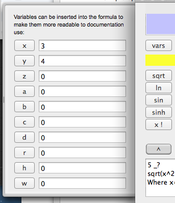
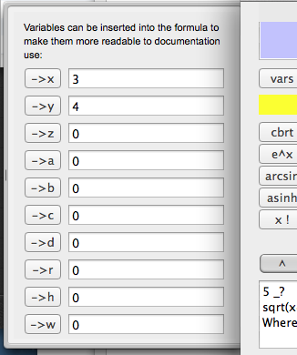
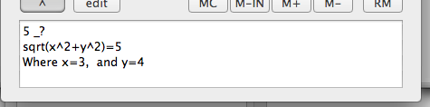
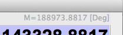

Sometimes you need to enter a formula, where the same value apears more than once. You might even need to test your formula with different values to see what fits best. The answer is Variables.
There is a number of variables on the "Vars" button. When you press this, a drawer opens on the left side, with 10 variables, named x, y, z, a, b, c, d, r, h, w - Pressing the buttons on the left side insert this variable into your formula.

You can either write the values of the variables directly in the variable text fields - or you can press the "shift" key on the calculator. You then see all the variable buttons got an arrow to indicate that the result of your last formula is to be assigned to this variable. In this way, you can also use it as extra memories.

This is great for storing intermediate results. If you do several formulas to obtain a final result, after you are done with the first one, just press the ^ key, and store the result in, lets say variable x. When you start on the next formula, and you need the value in x, you just push the x, and "x" is inserted into your formula. When you are finished with this, repeat but store in "y", and you now have both x, and y available for the next formula.
When you hit the "=" key, the formula and result is also logged on the print roll. Even if its not shown. You can copy & paste from the printroll as well, if needed. To open the print roll, press "Roll". You can now push the edit key, and have a formula text box where you can edit the formula as you like. cut & paste from everywhere, including the print roll.
The print roll is editable, so you can even scratch notes on it while working. To save, select all, and copy, paste into your favorite note pad.
If you create standard formulas you often use, then using variables in the formula makes it even easier to use.
Below the line, the calculation engine has figured out the variables you have referenced, and put a line below in the formula area: It says, to example

The memory
The calculator has a memory. This is like most other calculators. This is not a variable, you can store values in it, add to it, subtract from it, recall it, clear it, and so forth. When there is a value in the memory, you will have a line above the display:

You can cut & paste from this location as well.